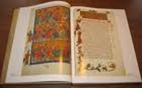

ИЗДАНИЕ 30
Порча - это вред, причиняемый кому-либо магическим путем. Существует множество способов насылания порчи. Как и любая другая магическая операция, порча основывается на концентрации воли, особом острое подсознания, жгучей эмоции, развитом воображении. Колдуны, приводя себя эмоцией ненависти и желания зла в соответствующее состояние, посылают зло при помощи своего воображения.
Некоторые колдуны испытывают непреодолимое желание постоянно наносить вред.
Нередки случаи, когда колдун просто посылает порчу "по ветру". Для этого он берет с дороги пыль и, бросая ее вслед случайному прохожему, насылает ему магические болезни при помощи заклинаний и своего эмоционального настроя.
Другие колдуны "навязывают килы, нарывы". Это они делают при помощи шерстяной нитки с завязанными узлами. Такая нитка с заговоренными узлами бросается на землю под ноги прохожих.
Каждый проходящий или первый наступивший на такую нитку (это зависит от силы колдуна) заработает себе хронические нарывы, которые очень трудно поддаются обычному лечению.
Существуют способы насылания "порчи на след", изготовление "завязки" для воздействия на "мужскую силу" и многие другие способы.
Признаки колдовского воздействия
1. Беспричинное ощущение несчастья или беды, вне
запные мысли о самоубийстве, сильная тоска.
2. Появление характерных слов, которые могут вклю
чать в себя чувство тяжести на грудь, как если бы кто-то
становился на спящего.
3. Чувство страха и угнетенности - это один из верней
ших признаков магического нападения.
4. Резкое исхудание.
5. Появление дурных запахов, которые как произволь
но появляются, так и исчезают. Это может быть запах раз
лагающейся плоти.
6. Наличие у порога разлитой воды, иголок.
7. Появление галлюцинаций, шума, следов слизи и кро
ви.
8. Внезапные скандалы в семье, без видимых причин,
необъяснимая злоба.
9. Неудачи.
Если Вы обнаружили признаки колдовскою воздействия, направленные против вас, не падайте духом. Это самое главное. Если это Вам удалось, то половина сражения выиграна.
Когда у своих дверей Вы обнаруживаете подозрительные пучки волос, щепки, нитки с завязанными узлами и другие вещи, не прикасайтесь к ним руками - сметите на дощечку или картонку и выбросьте вместе с веником и импровизированным совком в отхожее место подальше от своем дома.
Нужно всегда быть готовым к тому, что в любой момент у Вас может появиться недоброжелатель, прибегающий к помощи Черной магии. Лучше всего иметь один или несколько заряженных амулетов, которые предохранят Вас от любого колдовском воздействия в любое время суток. Амулет может быть драгоценным или изготовлен ритуально из простого недорогого материала.
Порядок действий при лечении от порчи
Часто лечение порчи затруднено, потому что когда люди начинают лечиться от порчи, то не скрывают этого от окружающих. Это может ориентировать ведьму стремиться добить свою жертву до кбнца. Суть всех заговоров в том, чтобы изгнать порчу и возвратить здоровье больному. Лечение начинается с того, что над водой трижды читается молитва "Отче наш" затем просьба и обращение к святым с просьбой молить Бога о прощении грехов, исцелении раба Божьего (указывается имя), затем читается молитва Кресту и только затем читается заговор.
Снятие порчи
Зачерпнуть ковшом немного воды и опустить в него ложки (сколько захватишь). Потом, одну оставить и зачерпывая этой ложкой из ковша, лить в него же по три раза через дверную скобу или ручку, а всего через три ручки. Внезапно спрыснуть на больного этой водой и дать попить. Оставшуюся воду использовать для мытья в бане. Если оговорен ребенок, то перед тем как вспрыснуть его, нужно прижать его ручки к туловищу, чтобы он не "встрепенулся". Если это не поможет, нужно взять немного земли или снега со свежего следа, оставленного сглазившим и в воде с молитвой выпить. Чтобы сглаз не подействовал, нужно прикусить кончик языка и мысленно послать порчу обратно.
Заговор 1 (от порчи)
"Господи благослови. От престола до царских ворот шел Ангел, в ограде хварии, на крутой горе стоит стол, а на престоле стоит Матушка Пресвятая Богородица и держит над болящими (имя) меч и саблю. Мечом убивает, саблей иссекает (эту фразу два раза). Поставь, Господи, сердце на свое место, укрепи, крепче замкни ворота, ключи в воду. Аминь, аминь, аминь. Чучуй, Чучуй, Чучуй выйди из раба Божьего (имя) изнутри, живота, из плеч, из очей. Не выйдешь добром, то пойдешь худом: святой Юрий придет, бичом настигнет, святой Егорий придет - копьем заколет. А святой Михаил сечкой засечет, огнем сожжет, пепел твой по белу свету разнесет. Матушка Пресвятая Богородица, семистрельная, состреливая своими семистрелами и разрезай своими четырьмя булатными ножами (здесь три раза в виде креста резать ножом воду) в рабе Божьем (имя) все боли, все скорби, притко, накидки, хомуты, сети, килы, подтелки, чепожу, немощь, головную боль, бессонницу, бездреманницу, все боли, ове скорби, грусть, тоску, печаль уйми, Матушка Пресвятая Богородица со всеми святыми во веки веков Аминь, аминь, аминь."
Заговор 2 (от порчи)
"Первым разом, Господним часом. Божья Матушка Дева Мария, помоги. Господи, рожденному, крещенному, молитвенному, болящему рукавице (имя), чтоб было на исходе, на молоде, и на полну месяцу. Умей. Матушка, спородить, умей Матушка, причинку дать с буйной головы, ретивого сердца, красной крови, русого волоса, карих очей, белых мозгов и белого тела, белого живота, со всех пальчиков, суставчиков, из жил, из пожил. Тут тебе не быть, тут тебе не жить, желтые кости не сушить, белого тела не ломить, треличья, беличья, ветровая, вихровая, полуденная, полуночная.
Двенадцать братьев, двенадцать сестер, придите на помощь рожденному, крещенному, молитвенному рукавице (имя) Испуг, страсть, вылейся на огонь и воду (три раза). Целитель Пантелеймон, умоли Христа Бога даровать здравие телу и спасение души болящего (имя), исцели от страстей, испуга, порчи, от полуночника, от младенческого. Приди на помощь, Божья Матушка, со своими, молитвами. Приди на помощь, Илья пророк, со своею водичкою. Святой мученик Трифоп, помоги болящему (имя). Выйди, выступи начерные воды, на черные пески, Аминь, аминь, аминь". Здесь применяется расплавленный воск, который выливается в воду при каждом произношении'за-говора после слов "Божья Матушка" в самом начале заговора. Этот заговор читается сорок раз. Чашка с водой сначала держится над головой, затем подносится к различным органам, сердцу, печени, легким и т. д.
"Всякому рожоному человеку: соли в глаз, песку горячего, огня палящего - злому и лихому, порченику и уроче-нику. Всякому рожоному человеку Божий твари не узнать; облака не открыть, не отпереть: частых звезд не оббивать и не ощипати; утряны зори топором не пересечи; млада месяца не втолкнуть, не отпереть - так 'и меня, раба Бо-жия (имя рек), никому не испортить, неизурочить век по веку, отныне и до веку. Которые слова забытующие, обы-дущие - будьте вы, мои слова, все сполна переговорены век по веку, отныне и до веку. Небо - ключ, земля - замок. Во имя Отца и Сына и Святого Духа. Аминь".
"Встану я раб Божий (имя), благословлясь, пойду, перекрестясь, из избы дверьми, из двора воротами, пойду а чисто поле, поклонюсь и помолюсь истиному Христу, Его-рью Храброму; облаком оболокусь, утренней зарей под-поящуся, младым месяцем сотьнуся, частыми звездами затычуся от призеров, or причи, от прикосов, от приуроч-ливого человека, от прикосного человека, от черного, от черемного, от русого, от белого, от черноглаза, от сероглаза, от белоглаза, от черноплота, от сероплота, от бело-плота, от одножена, от двоежена, от однозуба, от двоезу-ба и от троезуба, и от колдуна, и от колдуньи, от бедуна и от ведуньи, и от всякого злыя, лихия, и от своей жены, и от чужия, и от своего человека, и от чужого, и от своей семьи, и от чужия, и от всякого рожденного: от сутулого и от горбатого, наперед поклятого, от старца, от старицы, от чернеца, от чернихи и от попа, и от дьякона, и от подомо-ря, и от всего крылоса, и от девки-простоволоски, и от бабы-белоголовки, от девки-простоволоски, на дороге стричного, постигающего, засмотряющего, завидящего. Злому и лихому, порченику, урченику, всякому рожденному человеку - мякина в глаз, жалезна спица в гузно, дрес-вянный камень в зубы - злому и лихому, порченику и уро-ченику."
От порчи на ветер.
1. Берут из трех колодцев (или 3-х прорубей) воду, кото
рой обливают больного 3 раза; при черпании воды приго
варивают: "Царь речной! Дай воды наболтанной на лего-
ту, на здоровье рабу Божию (имя раба)". Когда несут воду,
ни с кем не разговаривают и даже не здороваются.
2. Обводя выпавшим сучком больное место, говорить:
"Как у Матушки сухой сосны сохнут и посыхают сучья и ко
ренья из белой болони и красного сердца, так бы сохло и
посыхало у (имя) уроки и призеры, и притки с буйной го
ловы с русых волос, с крови горячей и трепещущего тела".
Снятие порчи с животных
По количеству околдованных животных нужно взять большую или маленькую чашку соли и произносить заклинание: "Herego gomet hunc gneridans sesserant deliberant amei". Начиная с солнечного восхода три раза обойти вокруг животных по пути светила; все время находиться лицом к ним (стаду). Говоря заклинание, бросать в животных соль щепотками.
Молитва кресту
(При чтении знаменуют себя крестом) "Да воскреснет Бог, и расточатся врази Его, и да бежат от лица Его ненавидящий Его. Яко исчезает дым, да исчезнут; яко тает воск от лица огня, тако да погибнут беси от лица любящих Бога и знаменующихся крестным знамением, и в веселии глаголющих: радуйся, Пречестный и Животворящий Кресте Господень, прогоняй беси силою на тебе протятого Господа нашего Иисуса Христа, во ад сшедшего и поправшаго силу диавола, и даровавшего нам тебе Крест Свой Честный на прогнание всякого супостата. О, Пречестный и Животворящий Крестите Господень! Помогай ми со Святою Госпоже/о Девою Богородицею и со всеми святыми во веки".
Заговор (от порчи)
"Текла водички из крынички через город Иерусалим от колдуна, от колдуньи, от еретика, от еретиц, от ученых и рожденных, от детского и младенческого, от тифа и лихорадка, от пустых родов, от кровоточения, от испуга, порчи, от тоски текучей, колючки колючей, гнетущей, кислой, пресной, встреченной, поперечной, ветряной, водяной, засеянной и насланной (здесь надо крестить воду и говорить): в городе Иерусалиме пред престолом Сам Господь Иисус Христос, Илья пророк со своим золотым жезлом поражает бесов, святым огнем-пламенем, иорданской водой. Страстным огнем я тебя вызываю-изгоняю: выйди, сатана, с раба Божьего (имя) из уст, из волоса, из голоса, из буйной головы, из белой кости, из красной крови, из шеи, из позвоночника, из сердца, из желудка, из почек, из печепи, из зелени, из матки (если женщина), из яичников, из мочевого пузыря, из кишок, из рук, из ног, из жил, из пожил, из пальчиков и суставчиков. Тут тебе не быть, чер-воной крова не пить с порожденного, молитвенного крещенного раба Божьего (имя) во веки веков. Аминь".
Снятие "завязки"
Выполняется при порче, когда колдун обвивал маленькую восковую фигурку изображающую жертву тесьмой или шнурком с произнесением заклинаний и втыканием шила, а также при порче когда жениху утром после свадьбы насылают перчу со словами "пока завязано, не выпрямишься". Чтобы предупредить эту порчу, в карман кладется четверговая соль, а можно натереть волчьим салом порог, дверь и косяки.
Заклинание Папы Льва (для снятия заклятия)
Lasgaroth + Aphonidos + Palatia + Urat + Condion + Lamacron Fandon + Fahagon + Alamar + Bourgasis Vemat Serebani. Это заклинание заключает большую силу. (Кресты указывают, что надо креститься и кланяться). Главное в заговоре - могучая, замыкающая сила самого слова, поэтому необходимо точно запоминать сам'порядок слов, т. к. сие слово есть утверждение и укрепление, им же утверждаются и замыкается ... и ничем: ни воздухом, ни бурею, ни водою дело сие на отмыкается. Перед всяким заговором обыкновенно произносится молитва: "Николай, угодник Божий, помощник Божий. Ты и в поле, ты и в доме, в пути и дороге, на небесах и на земле, заступись и сохрани от всякого зла".
СГЛАЗ
Сглаз - это целенаправленный поток отрицательной информации создаваемой эмоцией зависти или злобы. Бывает и случайный сглаз, когдачеловек невольно наносит ущерб здоровью другого человека. Человек, которого сглазили может почувствовать зевоту, недомогание или просто испытать ощущение, что ему желают зла. Можно самостоятельно противостоять сглазу.
Необходимо прямо смотреть в глаза тому, от кого можно ожидать сглаза и про себя прочитать заклинание:
"Через кочку и сугроб, мимо глаза - прямо в лоб. Отведи мою беду не на друга, а к врагу!" или "Откуда пришло, туда и ушло".
Это очень действенные заклинания. Ваш недоброжелатель отреагирует мгновенно. А зло направленное на Вас не причинит Вам зла.

Лечение "сглаза"
Все заговоры от сглаза делаются на воду. Для этой цели берут непитую воду. Это условие обязательное.
ЗАГОВОР № 1
Нужно избрать воды и чашку или банку, бросить щепотку соли, зажечь спичку и пока она горит перекрестить ею трижды приготовленную воду, трижды произнося:
"So имя отца и сына и Святого Духа. Аминь".
На горящей спичке нужно трижды обломить сгоревшую часть и бросить отломленные сгоревшие части в воду. Затем над водой 9 раз читают заговор. После этого больного сбрызгивают водой, произнося: "Во имя Отца и Сына и Святого Духа. Аминь" и дают больному пить воду. Он должен пить воду несколько раз в день.
ТЕКСТ ЗАГОВОРА:"Во имя Отца и Сына и Святого Духа. Аминь. Чистая кровь и небесная! Спаси, сохрани раба Божьего (имя) от всякого глаза, от худого часа, от женского, qr мужского, от детского, от радостного, от ненавистного, от наговорного, от переговоренного".
ЗАГОВОР № 2
В воду бросается щепотка соли, сжигаются 3 спички, которыми крестят воду со словами: "Во имя Отца и Сына и Святого Духа. Аминь". Сгоревшие спички бросают в воду. Заговор читается 12 раз. Слова должны выдыхаться прямо в воду. Затем больного трижды сбрызгивают водой со словами "Во имя Отца и Сына и Святого Духа. Аминь".
ТЕКСТ ЗАГОВОРА: "Во имя Отца и Сына и Святого Духа. Аминь. Сохрани, Господи защити, Господи, укрой, Господи, раба Божьего (имя) от черного, от желтого, от карего, от серого, от белого, от мужского, от женского, от младенческого, от девичьего, от ребячьего глаза, от думок, от передумок, от разговоров, от переговоров, от злых людей. Не я выговариваю, выговаривает Пресвятая Богородица своими устами, своими перстами, своим Святым 'Духом".
ЗАГОВОР № 3
Читается над водой девять раз после того, как в воду бросается щепотка соли, сжигаются 3 спички со словами: "Во имя Отца и Сына и Святого Духа. Аминь" и сгоревшие спички бросаются в воду.
ТЕКСТ ЗАГОВОРА: "На синем море девица стояла, синим платком махала, Матушку Божью на помощь призвала. Сойди, Матушка Божья, и помоги рабу Божьему (имя) и прогони болезнь глазную на темные леса, на густые лозы, где месяц не светит, где солнце не греет, где ветер не веет. Не я выговариваю, а Пресвятая Богородица помогает своими устами, своими перстами, своим Святым Духом. Во имя Отца и Сына и Святого Духа. Аминь".
Выливание испуга
Для "выливания" испуга применяется расплавленный воск. Можно вместо воска использовать церковные свечи. В этом случае свечи предварительно переплавляются. Всего потребуется около 200 грамм воска и около 3 литров воды. Вода должна быть непитой. Больного усаживают лицом к двери. Над его головой держится чаша с водой. Лечение начинается обращением к Богу молитвой "Отче наш". Затем произносят слова: "Во имя Отца и Сына и Святого Духа. Аминь". При этом в воду выливается немного расплавленного воска. Затем произносятся слова заговора: "Страсти, страсти выйди, вылейся от раба Божьего (имя, если это ребенок добавляется слово "младенец") из буйной головы, из густых кудрей, из ясных очей, из ретивого сердца, из рук, из ног, из жил и спожил, из белого тела, из красной крови, -из чистого живота. Не я выливаю страсти, испуг, а выливает Матушка Пресвятая Богородица со всеми ангелами, архангелами, хранителями и покровителями". Читается на воду над головой пострадавшего 9 раз. Чтобы убедиться в результатах своего труда, достаточно перевернуть воск. На нижней стороне воска появляются причудливые очертания, по которым опытный целитель безошибочно определяет причину испуга. Если воск с нижней стороны такой же гладкий как и сверху - значит лечение прошло удачно. Лечение можно проводить утром и вечером в течении одного дня. В случае сильного испуга проводят три, шесть или девять сеансов до полном выздоровления. Больной, после проведения сеанса сразу чувствует значительное улучшение. Целитель, как правило, испытывает физическое недомогание. Чем сильнее испуг - тем хуже самочувствие целителя.
Лечение бешихи и рожи (1)
Читать: "Отче наш". Затем: "Шла Христова Матерь, встретили ее три брата, стали пытать: "Где идешь, Христова Мать? Иду бешиху и рожу шептать от раба Божего (имя) рожденного, крешенного, молитвенного, причащенного, Бешиха и рожа ломовая, пухлая, нарывная, гнойная, ветровая, водяная, думаная, заданая, спаданая. Не сама я ее выговариваю, Господа Бога на помощь призываю, двенадцать ангелов и апостолов. Аминь, аминь, аминь". Читать девять раз, крестить и обводить больное место.
Лечение бешихи и рожи (2)
Читать: "Отче наш". Затем: "Рожа-рожище, бешиха-бе-шище, прилетел орлище, сел на бешище, крыльями размахал, лапами разодрал. Тут тебе не быть, желтых костей не ломить, красной крови не пить, белого тела не сушить, ретивое сердце не томитль, буйную головушку не ломить. Помилуй и сохрани, Господа, раба Божьего (имя), молите Бога нас (перечислить святых). Читать девять раз, красным лоскутом обводить больное место.
Лечение сибирки (1)
Читать: "Отче наш". Затем: "Пресвятая Богородица стояла, в руках ножик держала и сибирку секла, рубила-секла, рубила-секла, рубила-секла, Господню молитву читала на сходи, на нови, на щерби присекала и прибивала". Читать три раза, больное место крестить и обводить рукой.
Лечение сибирки (2)
Читать: "Отче наш". Затем: "Во имя Отца и Сына и Святого Духи. Аминь. В теле раба Божьего (имя) рождённого, крещенного, молитвенного, причащенного не огонь, не вода, не гром, не молния. В теле раба Божьего (имя) аста политская, язва в руках, ногах, три совицы меж ног ветру, вот моя молитва, ключ и замок - чурта". Читать три раза.
Заговор от чирея
"Отче наш". Затем: "Выйди, боль, с белого тела, с красной крови, с желтой кости". Читать девять раз, обводить больное место и крестить. По окончании трижды плюнуть.
Заговор от сучьего вымени
Очаговое воспаление под мышкой "сучье вымя" лечат читая "Отче наш" девять раз. При чтении обводят больное место и крестят. Закончив чтение, трижды плюют.
Молитва от всех болезней
Во избавление от болезней рабу Божию (имярек) крест хранитель, крест красота церковная, крест держава царям, крест скипетр князей, крест рабе Божией (имярек) ограждение, крест, прогоните от рабы Божией (имя рек) всякого врага и супостата Святые святители Иван Предтеча Богослов, друг Христов, Тифинская, Казанская и Смоленская Божья матерь, во святом крещении Пятница Параско-вья, молите Бога избавлении от болезней рабу Божию (имярек). О, сдвиженья честного и животворящего креста Господня, святый Победоносец Егорий Храбрый, великомученик, возьми ты свое копье, которое держащее на змия льстивого; архангел Михаил, возьми ты сое пламенное копье и отразите у рабы Божией (имярек) тишинку и родимца сновидящие, ревущие и отрыгающие ветры и пострелы, денные и ночные переполохи, и всякие скорби и болезни из семидесяти суставов, из семидесяти жил и от всей внутренности тела, двенадцати родим - родинцам и двенадцати женам простоволосым. Святые архангелы и ангелы, херувимы и серафимы, небесный сил воевода Ми-хайло Архангел, Вознесение Господне, святый пророче Божий Илья, Великая святая София над вратами Царя -града, Анастасия и Варвара великомученица, святые жены мироносицы, проведный Иван юродивый, Богородица во Иерусалиме, граде Иудейском, в который пришел Господь Бог наш Иисус Христос, Сын Божий, преподобные отцы Изосим и Савватий, Соловецкие чудотворцы, молите Бога о избавлении от болезней рабу Божию (имярек). Как же не достанет дерево от земли до небеси вершиной и как у истинного Христа Бога нашего не бывать ни тишинки, ни родимцев, ни каких скорбен и болезней от видимых и невидимых, супротивные силы и врага отлученного, от хра-са изгненного лукавого духа возобновляется у раба Божья
(имярек) от всякия скверны и от ветров буяных, и от воды пришедших, всяких скорбей и болезней и святым крестом одружась. На пристоле сидит сам Иисус Христос, Сын Божий, и святый Михаил и Гавриил архангелы, Тихон преподобный, Макарий Унженский. Дмитрий Ростовский - на прогонение из головы, ребер и всей внутренности и тела - водяных, больших болотных скорбей - недугов: ключевая, струевая, и ветреная от ветров. И молюся: отнесите от рабы Божией (имярек) тишину и родимца, ревучие и от-рыгучие. головного и поветренного пострела, денные и ночные переполохи. каменные болезни, поносы, чирьи, чесотку, сифилис, и всякие скорби и болезни двенадцати родовом-родимцев и двенадцати женам простоволосым, сим стоит гора Фавор, на горе лежат скирды церковные, самыя Пресвятые Богородицы, владычицы. Владимирской, Казанской, Спасской и Обновление о нове граде Иерусалиме, на лобном месте, и возобновляются, я, раба Божия (имярек), тишину и родимца, стрегучие, ревучие, сновидные, поветренные, водяные, денные и ночные переполохи и всякие скорби и болезни от супротивныя силы при рождении месяца, при полном и при ветхом месяцах, и во всякое время дня и ночи прогоню. И еще же я, раба Божия (имярек), крестом крашусь, крестом огражусь, крестом Бога на помощь призову, крестом дьявола прогоню, крестом всякие скорби, болезни очищаю. Господи, помилуй мя. рабу Бажию (имярек). Аминь."
ИЗ РЕЦЕПТОВ КОЛДУНА ТАРАСОВА
Головная боль пройдет или станет значительно слабее, если прижаться лбом к оконному стеклу, потому что нейтрализуется электрический заряд, скопившийся на коже и вызывающий болезненные ощущения. Можно также прибинтовать ко лбу и вискам свежий капустный лист, предварительно скомкав его, чтобы он пустил сок. Этим соком нужно смазать запястья рук и углубления за ушами.
От насморка помогают смесь меда с соком сырой красной свеклы. Смешивают чайную ложку меда и три ложки свекольного сока. Закапывают в нос по несколько капель три-четыре раза в день.
* * *
При заболеваниях кожи пораженный участок смазывают натуральным медом или же применяют компресс и местные ванны тридцатипроцентного раствора меда. Процедуры проводятся один-два раза в день, но после необходимо не менее двух часов находиться дома.
* * *
Гнойные и инфекционные раны лечат компрессами с раствором меда (тридцатипроцентный раствор, приготовленный на дистиллированной или переваренной воде). Температура его не должна превышать 32 градуса. Если нег никакой возможности приготовить раствор, то раны просто мажут медом и сверху'накладывают легкую стерильную повязку.
* * *
При воспалении горла и десен таким же раствором промывают и полощут рот.
* * *
Нужно помнить один маленький "колдовской" секрет: вокруг больного, которого лечат медом обязательно должна быть спокойная обстановка. Обращайтесь с ним, как с ребенком, улыбайтесь, шутите, приговаривая, например, такие вот слова: "Мед-медок, три горсти, помоги сеть сплести, помоги увести горести и болести"
Заговоренная нить" - красная шерстяная нитка, провязанная вокруг запястья, улучшает кровообращение, ускоряет заживление ран и порезов на руке, помогает при растяжении сухожилий.
* * *
Больной выздоравливает быстрее, если к изголовье кровати положить на блюдечке свежие дольки разрезанного чеснока.
* * *
Ночные кошмары перестанут вас мучить, когда над своим изголовьем вы повесите веточку осины с зелеными листьями. Еще несколько листьев скатайте в шарик и. сильно надавливая, очертите им вокруг кровати замкнутый контур. И пусть вас не смущают скептические улыбки окружающих - здоровый сон стоит этих улыбок!
* * *
От тромбофлебита и варикозного расширения вен помогает настой антоновских яблок, очищающих кровь, улучшающих сон и аппетит. Три среднего размера яблок промывают холодной водой и укладывают на дно эмалированной кастрюли. Затем литром крутого кипятка заливают яблоки, закрывают кастрюлю крышкой, закутывают в одеяло и через четыре часа, не вынимая яблоки из остывшей воды, разминают их прямо в кастрюле, а образовавшуюся насгойку процеживают и пьют с медом: ложку меда запивайie 50 граммами настойки. Пейте утром натощак и перед сном.
Быстро похудеть вы сможете, если несколько дней полностью откажетесь от употребления соли. Бессолевая диета полезна не только для фигуры, но и для здоровья. В тече-ниедиеты ежедневно принимайте пятнадцатиминутный контрастный душ, сменяя холодную и теплую воду через каждые пятнадцать секунд. При этом мысленно представляйте свою фигуру в том виде, который вы хотели бы иметь.
Уникальные издания.